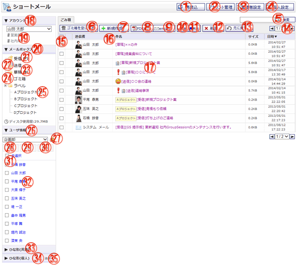

ゴミ箱へ移動したショートメールの一覧を確認する画面です。

機能説明
再読込ボタンショートメール一覧を再読込します。再読込が終了するとゴミ箱の一覧を表示します。 |
アカウント管理ボタン個人設定のアカウントの管理画面へ遷移します。 |
|---|---|
管理者設定ボタン管理者設定画面へ遷移します。 |
個人設定ボタン個人設定画面へ遷移します。 |
検索ボタン入力されたキーワードを元に詳細検索画面へ遷移します。 |
ゴミ箱を空にするボタンゴミ箱内にあるショートメールを全て削除します。クリックすると確認画面へ遷移します。 |
新規作成ボタンショートメール新規作成画面へ遷移します。 |
PDF出力ボタン選択されたメッセージのPDF出力を行います。 |
eml出力ボタン選択されたメッセージのeml出力を行います。 |
既読ボタン選択されているショートメールを既読にすることが出来ます。 |
未読ボタン選択されているショートメールを未読にすることが出来ます。 |
削除ボタン削除確認画面へ遷移します。削除確認画面でOKボタンをクリックすると、一覧でチェックを付けたメッセージを削除します。 |
元に戻すボタン元に戻す確認画面へ遷移します。一覧でチェックを付けたショートメールをゴミ箱から元に戻します。 |
ページコンボ・前頁・次頁ページコンボで任意のページへ、前頁アイコンクリックで前のページへ、次頁アイコンクリックで次のページへそれぞれ遷移します。 |
ヘッダチェックボックスチェックをつけると、１ページ分の全てのチェックボックスにチェックが付きます。チェックを外すと、１ページ分の全てのチェックボックスのチェックが外れます。 |
ヘッダタイトルクリックによって一覧のソート条件の切り替えを行います。現在ソート条件になっている項目をもう１度クリックすると「昇順」「降順」が切り替わります。 |
ショートメール内容ショートメールの送信者、マーク、件名、日時を表示します。 |
アカウント詳細切り替えクリックするとアカウント詳細が表示されます。 |
アカウント一覧表示されているアカウントを選択することが出来ます。
|
メールボックス詳細切り替えクリックするとメールボックス詳細が表示されます。 |
受信ボックス受信したショートメールの一覧を表示します。括弧内の数字は、未読のショートメールの数です。 |
送信ボックス送信したショートメールの一覧を表示します。 |
草稿ボックス作成した草稿の一覧を表示します。括弧内の数字は、草稿保存されている数です。 |
ゴミ箱ボックスゴミ箱へ移動したショートメールの一覧を表示します。 |
ラベルボックス選択されたラベルのショートメール一覧を表示します。括弧内の数字は、未読のショートメールの数です。 |
ユーザ情報詳細切り替えクリックするとユーザ情報詳細が表示されます。 |
グループボタンポップアップでグループ選択画面が開きます。
|
宛先ボタンチェックボックスで選択したユーザを宛先に設定し、新規作成画面を開きます。 |
CCボタンチェックボックスで選択したユーザをCCに設定し、新規作成画面を開きます。 |
BCCボタンチェックボックスで選択したユーザをBCCに設定し、新規作成画面を開きます。 |
全選択チェックボックスチェックをつけると、全てのユーザのチェックボックスにチェックが付きます。チェックを外すと、全てのユーザのチェックボックスのチェックが外れます。 |
ユーザリンク選択したユーザを宛先に設定し、新規作成画面を開きます。 |
ひな形（共通）一覧切り替えクリックするとひな形（共通）一覧が表示されます。 |
ひな形（個人）一覧切り替えクリックするとひな形（個人）一覧が表示されます。 |
ひな形追加リンクひな形一覧画面へ遷移します。 |
表示・入力項目説明
検索キーワード
検索するキーワードを入力します。